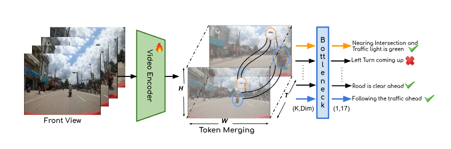
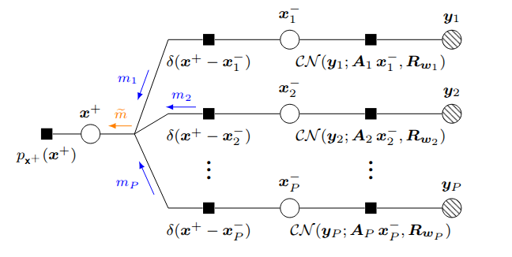

Research
I'm interested in computer vision, interpretability, generative AI, and robustness analysis. Some papers are highlighted.
|
|

|
Towards Safer and Understandable Driver Intention Prediction
Mukilan Karuppasamy,
Shankar Gangisetty,
Shyam Nandan Rai,
Carlo Masone,
CV Jawahar,
ICCV, 2025
project page
/
arXiv
Proposed a concept based inherently intrepretable model for Video models using concept bottleneck model and token merging. This was applied in Driver Intention Prediction task.
|
|

|
Distributed Vector Approximate Message Passing
Mukilan Karuppasamy,
Mohamed Akrout,
Amine Mezghani,
Faouzi Bellili,
ICASSP, 2024
github
/
pdf
Derived a collaborative signal estimation from multiple agents with different measurement channels through distributed message passing algorithm.
|
|
Micropapers
|
Squareplus: A Softplus-Like Algebraic Rectifier
A Convenient Generalization of Schlick's Bias and Gain Functions
Continuously Differentiable Exponential Linear Units
Scholars & Big Models: How Can Academics Adapt?
|
|
Recorded Talks
|
Radiance Fields and the Future of Generative Media, 2025
View Dependent Podcast, 2024
Bay Area Robotics Symposium, 2023
EGSR Keynote, 2021
TUM AI Lecture Series, 2020
Vision & Graphics Seminar at MIT, 2020
|
|
Academic Service
|
Lead Area Chair, ICCV 2025
Lead Area Chair, CVPR 2025
Area Chair, CVPR 2024
Demo Chair, CVPR 2023
Area Chair, CVPR 2022
Area Chair & Award Committee Member, CVPR 2021
Area Chair, CVPR 2019
Area Chair, CVPR 2018
|
|
Teaching
|
Graduate Student Instructor, CS188 Spring 2011
Graduate Student Instructor, CS188 Fall 2010
Figures, "Artificial Intelligence: A Modern Approach", 3rd Edition
|
Feel free to steal this website's source code. Do not scrape the HTML from this page itself, as it includes analytics tags that you do not want on your own website — use the github code instead. Also, consider using Leonid Keselman's Jekyll fork of this page.
|
|
{kind=link}